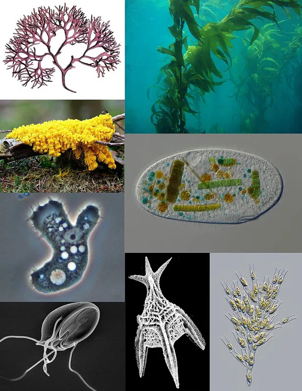

A tour of protist types (animal-like, plant-like, fungus-like) by how they eat and move, followed by a quick look at fungi.按摄食和运动方式介绍原生生物（像动物、像植物、像真菌的），最后简单讲真菌。YouTube
A fast overview of archaea, bacteria and protists, including protozoa, algae and slime molds. Good for linking the three groups.快速总览古菌、细菌和原生生物，包括原生动物、藻类和黏菌，适合把三类联系起来。YouTube
How mitochondria and chloroplasts came from bacteria that were engulfed and stayed. Five minutes, very clear.线粒体和叶绿体怎样来自被吞入后留下的细菌。五分钟，讲得很清楚。YouTube
Microscope footage of ciliates, flagellates and amoeboids moving, which is exactly how protozoans are grouped.纤毛虫、鞭毛虫和变形虫运动的显微镜画面，原生动物正是按这种运动方式分类的。YouTube
Meet Euglena up close: its shape-shifting movement, the eyespot that finds light, and how it ended up with chloroplasts.近看眼虫：变形的运动方式、能找光的眼点，以及它怎样得到叶绿体。YouTube
Diatoms: single-celled algae in glass shells that bloom so densely they show up from space.硅藻：住在玻璃质外壳里的单细胞藻类，繁盛时多到太空都看得见。YouTube
Links open other websites. Videos load from YouTube only after you tap them (no cookies until then).链接会打开其他网站。视频点一下才会从 YouTube 加载（点之前不会有任何跟踪）。
Terms词汇 34
PRO·tist

A few of the many kinds of protists, from seaweeds to single cells seen under a microscope.原生生物种类繁多的几个例子：从海藻到显微镜下的单细胞生物。Photo: Respectively: Claire Fackler, CINMS, NOAA, User:Wiedehopf20, Frank Fox, Patrick De Wever … · CC BY-SA 4.0 · Wikimedia Commons
A eukaryote that is not an animal, a plant or a fungus. Most are single-celled.
原生生物：不属于动物、植物或真菌的真核生物，大多数是单细胞。
🧠proto- = first. The "first" eukaryotes.proto- = 最初：最早的真核生物。
Leaf cells of the water plant Elodea under a microscope. The green dots are chloroplasts.显微镜下的伊乐藻叶细胞。绿色小点就是叶绿体。Photo: Juan Carlos Fonseca Mata · CC BY-SA 4.0 · Wikimedia Commons
The organelle where photosynthesis happens. It contains green chlorophyll.
叶绿体：进行光合作用的细胞器，含有绿色的叶绿素。
🧠chloro = green, plast = form.chloro = 绿色。
Quick check: Which organelle carries out photosynthesis?
Amoeba proteus under a microscope. The bulges at its edges are pseudopods ("false feet").显微镜下的大变形虫。边缘鼓出的部分就是伪足。Photo: SmallRex · CC BY-SA 4.0 · Wikimedia Commons
A temporary bulge of cytoplasm that an amoeba uses to move and to engulf food.
Amoeba proteus under a microscope, stretching out many pseudopods. It is about half a millimetre long.显微镜下的大变形虫，伸出很多伪足。它长约半毫米。Photo: SmallRex · CC BY-SA 4.0 · Wikimedia Commons
A single-celled protist with no fixed shape that moves and feeds using pseudopods.
Tetrahymena, a ciliate, under a fluorescence microscope. The fine lines along its body are rows of cilia.荧光显微镜下的四膜虫（一种纤毛虫）。身上细细的线是一排排纤毛。Photo: see source · CC BY 2.5 · Wikimedia Commons
Short, hair-like projections that beat together to move a cell or sweep food. Singular: cilium.
A paramecium under a microscope. It is about 0.2 millimetres long and covered in tiny cilia.显微镜下的草履虫。它长约 0.2 毫米，全身长满细小的纤毛。Photo: Barfooz at the English Wikipedia. · CC BY-SA 3.0 · Wikimedia Commons
A slipper-shaped protist covered in cilia, that lives in fresh water.
草履虫：全身覆盖纤毛、形似拖鞋的淡水原生生物。
🧠paramecium = oblong.草履虫像一只拖鞋。
Quick check: What covers the surface of a paramecium?
A euglena under a microscope: green chloroplasts and a red eyespot near the front end.显微镜下的眼虫：绿色的叶绿体，前端附近有一个红色眼点。Photo: Petr Knotek · CC BY 4.0 · Wikimedia Commons
A single-celled protist with chloroplasts and a flagellum. It can make food or eat.
A paramecium under a microscope. The two lines point to its star-shaped contractile vacuoles.显微镜下的草履虫。两条线指着它星形的伸缩泡。Photo: derivative work: Hämbörger (talk) Paramecium.jpg: User:Josh Grosse · CC BY-SA 3.0 · Wikimedia Commons
An organelle that pumps excess water out of freshwater protists.
伸缩泡：把淡水原生生物体内多余的水排出的细胞器。
🧠contract = squeeze. It squeezes water out.contract = 收缩。
Quick check: Why do freshwater protists need contractile vacuoles?
Water keeps entering by osmosis, and the vacuole pumps it out.
A drop of sea water under a microscope: many kinds of plankton (bar = 100 micrometres).显微镜下的一滴海水：多种浮游生物（比例尺 = 100 微米）。Photo: Jay Nadeau, Chris Lindensmith, Jody W. Deming, Vicente I. Fernandez, and Roman Stocker. … · CC BY-SA 4.0 · Wikimedia Commons
Tiny organisms that drift in water instead of swimming against currents.
浮游生物：随水漂流、而不是逆流游动的微小生物。
🧠plankton = Greek for drifter.plankton 在希腊语里是「漂流者」。
Quick check: Does plankton swim against the current?
Mixed phytoplankton under a microscope: diatoms and other tiny algae from the sea.显微镜下的混合浮游植物：来自海洋的硅藻和其他微小藻类。Photo: University of Rhode Island/Stephanie Anderson · Public domain · Wikimedia Commons
Plankton that make food by photosynthesis. They start most ocean food chains.
浮游植物：通过光合作用制造食物的浮游生物，是多数海洋食物链的起点。
🧠phyto = plant. Plant plankton.phyto = 植物。
Quick check: Why are phytoplankton important?
They make food and oxygen and begin ocean food chains.
A freshwater copepod, a common zooplankton animal, under a microscope (dark background). It is about 1 millimetre long.显微镜下（暗背景）的淡水桡足类，一种常见的浮游动物，长约 1 毫米。Photo: Janeklass · CC BY 4.0 · Wikimedia Commons
Plankton that eat other organisms, including phytoplankton.
Diatoms under a microscope. Each one sits inside a glass-like shell.显微镜下的硅藻。每一个都住在玻璃般的外壳里。Photo: Prof. Gordon T. Taylor, Stony Brook University · Public domain · Wikimedia Commons
A single-celled alga with a glass-like shell made of silica.
硅藻：具有二氧化硅玻璃状外壳的单细胞藻类。
🧠dia = through, tom = cut: a shell in two halves.外壳分成两半。
Ceratium, a dinoflagellate, under a microscope. Its armour plates grow into long horns.显微镜下的角藻（一种甲藻）。它的甲板长成长长的角。Photo: Keisotyo · CC BY-SA 3.0 · Wikimedia Commons
A single-celled alga with two flagella that spins as it swims. Some cause red tides.
An algal bloom in Lake Erie seen from a satellite. The milky green water is full of tiny algae.卫星拍到的伊利湖藻华。乳绿色的湖水里满是微小的藻类。Photo: Jesse Allen and Robert Simmon · Public domain · Wikimedia Commons
A sudden, huge growth of algae in water.
藻华：水体中藻类突然大量繁殖。
🧠bloom = burst of growth, like flowers.bloom = 像开花一样突然繁盛。
A red tide off the coast of California. The water is coloured by billions of dinoflagellates.美国加州海岸的赤潮。海水被数以十亿计的甲藻染红。Photo: P. Alejandro Díaz · Public domain · Wikimedia Commons
An algal bloom of toxic dinoflagellates that can poison shellfish and make people sick.
赤潮：有毒甲藻的藻华，可使贝类带毒、让人生病。
🧠red from the colour of the water.水的颜色发红。
Quick check: Why is it unsafe to eat shellfish during a red tide?
A kelp forest under water. Kelp is a large brown alga that can grow taller than a house.水下的海带森林。海带是一种大型褐藻，可以长得比房子还高。Photo: Kip Evans · Public domain · Wikimedia Commons
A large brown alga that grows in cold sea water and forms underwater forests.
海带（巨藻）：生长在冷海水中的大型褐藻，能形成水下森林。
🧠kelp is multicellular but still a protist.海带是多细胞，但仍属原生生物。
Spirogyra, a green alga, under a microscope. Its chloroplasts form green spiral ribbons in each cell.显微镜下的水绵（一种绿藻）。每个细胞里的叶绿体排成绿色螺旋带。Photo: Wiedehopf20 · CC BY-SA 4.0 · Wikimedia Commons
Algae with chlorophyll that are the closest relatives of land plants.
绿藻：含叶绿素的藻类，是陆地植物最近的亲戚。
🧠green algae share chlorophyll types with plants.绿藻与植物有相同类型的叶绿素。
Quick check: Which algae are the closest relatives of plants?
The slime mold Physarum polycephalum: a bright yellow mass creeping over wood.多头绒泡菌（一种黏菌）：在木头上缓慢爬行的一团亮黄色物质。Photo: Le Bernemi · CC BY-SA 4.0 · Wikimedia Commons
A protist that feeds on dead matter and can creep like one giant cell.
Volvox under a microscope. Each green ball is a colony of hundreds of cells; small daughter colonies grow inside.显微镜下的团藻。每个绿球是由数百个细胞组成的群体，里面还长着小的子群体。Photo: Frank Fox · CC BY-SA 3.0 de · Wikimedia Commons
A group of single cells living together, each able to survive alone.
群体生物：一群生活在一起的单细胞，每个细胞都能独立生存。
🧠colony = a group living together.colony = 群体。
Quick check: How is a colony different from a multicellular organism?
Protists are eukaryotes that are not plants, animals or fungi. Most are single-celled. They are sorted by how they feed: animal-like, plant-like or fungus-like.原生生物是不属于植物、动物、真菌的真核生物，大多是单细胞。按摄食方式分为：像动物的、像植物的、像真菌的。
2/9
Organelles to know要认识的细胞器
The nucleus holds DNA. Mitochondria release energy from food. Chloroplasts carry out photosynthesis. Vacuoles store or digest.细胞核存放 DNA；线粒体从食物中释放能量；叶绿体进行光合作用；液泡储存或消化。
3/9
Where organelles came from细胞器从哪里来
Endosymbiotic theory says mitochondria and chloroplasts were once free-living prokaryotes. A larger cell took them in, and they stayed.内共生学说认为：线粒体和叶绿体曾是独立生活的原核生物，被较大的细胞吞入后留在细胞里。
4/9
Three ways to move三种运动方式
Pseudopods push an amoeba along. Cilia beat like oars on a paramecium. A flagellum whips back and forth to pull a euglena along.伪足推动变形虫；纤毛像桨一样摆动推动草履虫；鞭毛来回甩动，拉着眼虫前进。
5/9
Eating by phagocytosis靠吞噬进食
The cell surrounds food, wraps it in a vacuole and digests it with enzymes. Amoebas feed this way, and so do some of our own immune cells.细胞包住食物，裹进泡里，用酶消化。变形虫这样进食，我们自己的某些免疫细胞也一样。
6/9
Algae: plant-like protists藻类：像植物的原生生物
Algae photosynthesize with chlorophyll. They range from single cells (diatoms) to giant kelp. They are not true plants.藻类用叶绿素进行光合作用，从单细胞（硅藻）到巨大的海带都有。它们不是真正的植物。
7/9
Plankton and food chains浮游生物与食物链
Phytoplankton make food from sunlight. Zooplankton eat them. Fish eat zooplankton. Phytoplankton also release much of Earth's oxygen.浮游植物利用阳光制造食物，浮游动物吃它们，鱼吃浮游动物。浮游植物也释放地球上大量的氧气。
8/9
Blooms and red tides藻华与赤潮
Extra nutrients can trigger an algal bloom. When toxic dinoflagellates bloom, shellfish take up the toxins and become unsafe to eat.过多养分会引发藻华；有毒甲藻爆发时，贝类吸收毒素，不能食用。
9/9
Protists that cause disease引起疾病的原生生物
Plasmodium causes malaria. A mosquito is the vector. Controlling the vector, for example with nets, reduces the disease.疟原虫引起疟疾，蚊子是媒介。控制媒介（例如用蚊帐）可以减少疾病。
Test practice测验练习
1. Which is a protist?
Mushroom
Amoeba
Moss
Bacterium
Answer
B · An amoeba is a single-celled eukaryote that is not a plant, animal or fungus.
2. Which organelle releases energy from food?
Nucleus
Chloroplast
Mitochondrion
Vacuole
Answer
C · Mitochondria are the cell's powerhouses.
3. Which organelle carries out photosynthesis?
Mitochondrion
Chloroplast
Nucleus
Ribosome
Answer
B · Chloroplasts contain chlorophyll.
4. Endosymbiotic theory explains the origin of
the nucleus
mitochondria and chloroplasts
cell walls
viruses
Answer
B · They began as engulfed prokaryotes.
5. An amoeba moves by using
cilia
a flagellum
pseudopods
a tail fin
Answer
C · Pseudopods are temporary bulges of cytoplasm.
6. Paramecium moves using
cilia
pseudopods
muscles
legs
Answer
A · Cilia beat like oars.
7. A euglena can both photosynthesize and eat. It is a
mixotroph
decomposer
parasite
vector
Answer
A · Mixo = mixed feeding.
8. The contractile vacuole of a freshwater protist
stores food
pumps out excess water
makes sugar
detects light
Answer
B · It prevents the cell from bursting.
9. Phagocytosis is
making sugar from light
cell eating by wrapping around food
cell division
movement by cilia
Answer
B · The cell engulfs the particle into a vacuole.
10. Phytoplankton are important because they
cause malaria
make food and oxygen at the base of ocean food chains
are fungi
are vectors
Answer
B · They are the first link in many ocean food chains.
11. Which protist has a glass-like shell of silica?
Diatom
Euglena
Slime mold
Paramecium
Answer
A · Diatoms have silica shells.
12. A red tide is caused by
a bloom of toxic dinoflagellates
bacteria in soil
a virus
fungal spores
Answer
A · They poison shellfish.
13. Which organism is the vector of malaria?
Plasmodium
Mosquito
Amoeba
Paramecium
Answer
B · The mosquito carries the Plasmodium protist; Plasmodium is the pathogen.
14. Kelp is best classified as
a plant
a fungus
a multicellular protist (brown alga)
a bacterium
Answer
C · It is a large alga with no true roots, stems or leaves.
Match each term to its definition.
diatom
euglena
amoeba
zooplankton
red tide
Plankton that eat other organisms, including phytoplankton.
A single-celled protist with chloroplasts and a flagellum. It can make food or eat.
A single-celled protist with no fixed shape that moves and feeds using pseudopods.
An algal bloom of toxic dinoflagellates that can poison shellfish and make people sick.
A single-celled alga with a glass-like shell made of silica.
Answers
1→E, 2→B, 3→C, 4→A, 5→D
Match each term to its definition.
organelle
food vacuole
cilia
plankton
chlorophyll
The green pigment that captures light energy for photosynthesis.
A small structure inside a cell that does a specific job.
A bubble inside a cell where engulfed food is digested.
Tiny organisms that drift in water instead of swimming against currents.
Short, hair-like projections that beat together to move a cell or sweep food. Singular: cilium.
Answers
1→B, 2→C, 3→E, 4→D, 5→A
Match each term to its definition.
dinoflagellate
Plasmodium
green algae
kelp
colonial organism
Algae with chlorophyll that are the closest relatives of land plants.
A group of single cells living together, each able to survive alone.
A large brown alga that grows in cold sea water and forms underwater forests.
The protist that causes malaria. A mosquito carries it between people.
A single-celled alga with two flagella that spins as it swims. Some cause red tides.


_under_darkfield_microscopy.jpg){kind=link}


.jpg){kind=link}